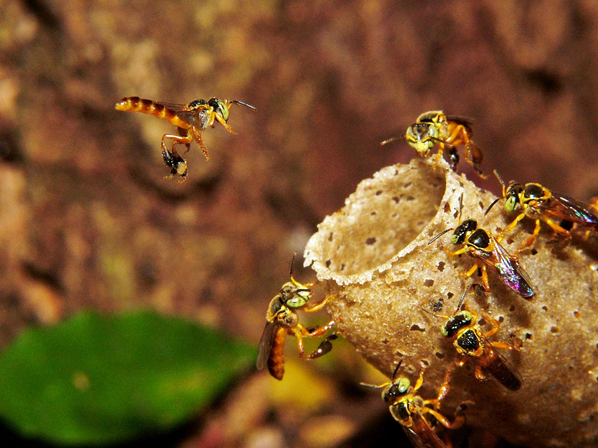
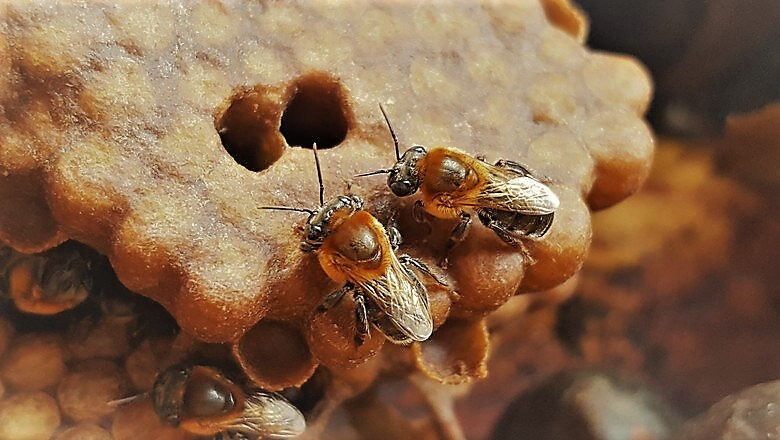

Mel das Abelhas sem ferrão
O mel de abelhas sem ferrão é apreciado por sua textura mais líquida e viscosidade, contrastando com o mel das abelhas com ferrão, que é mais espesso e cristaliza com maior facilidade.

Seu mel é considerado o mais delicioso que existe, além de ser diferenciado por sua consistência, aroma, coloração e sabor.
